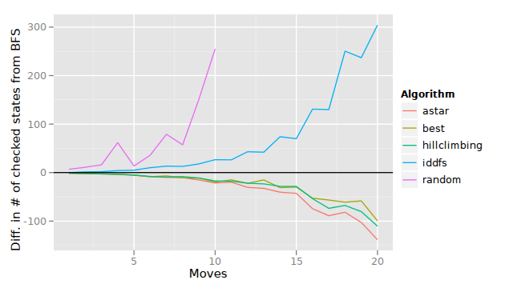
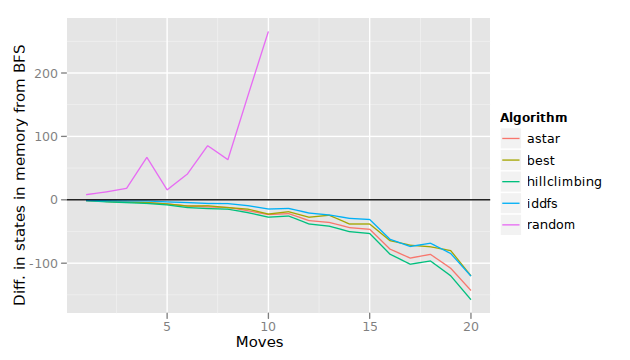

Informed search
Table of Contents
Generic search algorithm
Here is the algorithm again, first seen in the Uninformed search lecture notes.
1. create a list called "tocheck" of states to check
- put the initial state in this list
2. loop:
a. if the "tocheck" list is empty:
- oh no! we have nothing left to check, and we never found a
goal state! we'll have to quit with "no solution"
b. otherwise, pull a state from the "tocheck" list, ensuring that
we have not yet checked this state
i. if this state is a goal state, we're done (return this state)
ii. otherwise,
- find the next states accessible from this state
- put each next state in the "tocheck" list
- repeat the loop
In the uninformed searches, the random search used no particular technique for choosing the next state to check. Breadth-first search (BFS) checked the earliest discovered state, and depth-first search (DFS) checked the most recently discovered state.
BFS is probably the right solution if the goal state is not deep in the search graph. DFS is probably the right solution if the opposite is the case. Naturally, random search is probably never a good idea.
However, many problems do not fit simple descriptions like “the goal state is not deep in the graph.” The goal state may be anywhere, and in different occasions may be deep or shallow in the graph.
Rather than choose how to search based solely on breadth-first or
depth-first, we can often come up with better heuristics. A
heuristic is a “rule of thumb,” or some kind of rule that’s “usually a
good idea.” BFS and DFS have their own heuristics but their heuristics
(how to choose the next states to check) do not change depending on
the problem. Normally, we talk about heuristics in a more
problem-specific sense. A heuristic would be applied in step 2.b.,
in which we choose the next state to check.
Heuristics for 8-puzzle
Here are some heuristics we might apply to the 8-puzzle problem. Each heuristic is a function of a state, i.e., \(h(s) = n\) where \(s\) is a state and \(n\) is an integer:
- (OP): The number of tokens that are out of place.
- (MD): The sum of “Manhattan-distances” between each token and its goal position.
- (RC): Number of tokens out of row plus number of tokens out of column.
- Perform a breadth-first search from the state to the goal, counting the number of moves in the shortest path. This “heuristic” is perfect; but it requires solving the whole problem before choosing to follow that state (which is ridiculous).
Hill-climbing search
Imagine the search space as terrain. One or more high points on this terrain (tops of hills) are goals. If there is only one goal, then there is only one highest point. The idea with hill-climbing search is to always “climb” upwards, toward a high point. Once you find that no movement takes you to a higher point, then you are done. Note that you may have only found the top of a local hill (a non-goal), not the top of the tallest hill (the goal).
Hill-climbing search does not remember where it was prior to its current location in the search space. It’s also possible to actually perform this search in the real world (by climbing, for example); other searches that bounce around to different states or backtrack a lot are harder or impossible to perform in reality. This makes hill-climbing very efficient in terms of memory usage. However, if the search arrives at a local maximum rather than a global maximum, it has no way of fixing that error.
Our general search algorithm can be modified to support hill-climbing
search by modifying step 2.b.ii. so that the entire “tocheck” list
is deleted and replaced with only those states accessible from the
current state. Also, step 2.b. is modified to choose the best state
in terms of the chosen heuristic (“climb up the hill” means “maximize
the heuristic function”).
Best-first search
Best-first retains a record of every state that has been visited as
well as the heuristic value of that state. At step 2.b., the best
state ever visited is retrieved and search continues from there. This
makes best-first search appear to jump around the search tree, like a
random search, but of course best-first search is not random. The
memory requirements for best-first search are worse than hill-climbing
but not as bad as breadth-first. This is because breadth-first search
does not use a heuristic to avoid obviously worse states.
More sophisticated heuristics
Unfortunately, both hill-climbing search and best-first search can yield terrible solutions. Imagine a maze-navigating robot in a maze that has some windows in the walls. The robot can sometimes see the goal through windows. A hill-climbing or best-first search robot may believe it is close to the goal because it can see it through some windows, but in actuality it is quite far from the goal, and must actually back up to make progress. Instead, however, the robot keeps going deeper and deeper into the maze, enticed by the illusory nearness of the goal.
If the robot simply kept track of how “deep” it had gone into the maze, and if it had reason to believe that the goal cannot possibly be “this deep,” it would back up before going even deeper.
In other words, there is more to an appropriate heuristic than closeness to the goal. One must also keep in mind how many steps have already been taken. For example, if we are solving the 8-puzzle game, we should consider how many moves have already been made. If we are planning a driving route, we should consider how far we have already traveled (or planned to travel); perhaps there is a shorter route if we abandon the path we are on.
Thus, a good heuristic function actually has two parts: \(f(s) = g(s) + h(s)\), where \(s\) is a state, \(g\) computes the cost of arriving at \(s\) from the initial state (the number of moves to \(s\) or the distance traveled so far), and \(h\) is our heuristic, i.e., our estimate of how far away \(s\) is from the goal.
In the 8-puzzle, \(g\) is simply the number of moves made so far (to get to state \(s\)); in the routing problem, \(g\) is the miles traveled so far. In the 8-puzzle, \(h\) is one of the heuristics described above (OP, MD, RC); in the routing problem, \(h\) is perhaps an “as-the-crow-flies” distance (i.e., Euclidean distance) from \(s\) to the goal.
A* search
Let’s modify best-first search to use the new complex heuristic \(f(s) = g(s) + h(s)\). This is the algorithm known as A (not A*).
If \(g\) is the number of moves made so far (number of “hops” in the search tree) and \(h\) is always equal to 0.0, then we have breadth-first search. Recall that breadth-first search is optimal for unweighted graphs (graphs were the edges always have weight 1.0).
Actually, the A algorithm is optimal as well, even on weighted graphs, if we keep \(h\) constantly equal to 0.0. This is because it acts like breadth-first search, in that it always considers better alternatives before going “deeper.” The A algorithm here is optimal on weighted graphs because it simply considers the true path cost (unlike breadth-first search), and proceeds from the lowest cost path.
Furthermore, if \(h(s)\) always underestimates the true cost of a path from \(s\) to the goal, then the A algorithm is optimal. If we call the true cost function from \(s\) to the goal \(h^*(s)\), then we are saying that if \(h(s) \leq h^*(s)\) for all \(s\), then A is optimal. When this restriction is met, we call the algorithm A*.
An \(h\) that meets this underestimation criterion is an admissible heuristic, and turns the A algorithm into A*, which we call an admissible search algorithm. Furthermore, A* is the most efficient algorithm (called “optimally efficient”) that uses some particular heuristic. This means that any other search algorithm using the same heuristic will check no fewer states than A*.
How poorly \(h\) estimates the actual cost to the goal makes one \(h\) better than another. With \(h(s)=0.0\) for all \(s\), we have a very poor heuristic (unless the cost truly is always 0.0, but then why search?). Ideally, \(h\) is as close as possible (or equal to) \(h^*\) but still underestimates (if not equal).
If \(h\) overestimates the true cost to the goal, then our search algorithm will obviously make the wrong choices. It will move the robot farther from the end of the maze rather than towards the end.
Comparisons
Here we have the results of some experiments with the 8-puzzle problem. The breadth-first search (BFS) results are the 0 line. Results from other searches are shown as how far they differ from BFS. So, if a search is higher than the 0 line in these results, it performs worse (in all graphs, higher is worse); if it is under the 0 line, it performs better than BFS.
The x-axis in the graphs shows the complexity of the 8-puzzle problem. Starting with a solved 8-puzzle, we perform some number of random moves. The optimal solution to the puzzle is at most that many moves (the moves we made may “cancel each other out” in some cases, so the optimal solution back to the starting state may involve fewer moves). Since random search performs so badly, we do not show its performance characteristics in the graphs after 10 moves.
Number of checked states (time)

We use “number of checked states” as a proxy for computational time. Random is obviously quite bad. Interesting, IDDFS is also bad; this is because, at least how our algorithm works, many states are checked more than once when the algorithm restarts with greater depth limits.
Notice A* gets to the goal fastest. This is because A* is “optimally efficient.”
Maximum number of states in memory

“Memory” is measured as the maximum size ever encountered of the “tocheck” list. Hill-climbing search keeps the “tocheck” list the smallest, overall, because it always deletes the list and creates a new list with only the next accessible states.
BFS uses a lot of memory because it keeps knowledge of all accessible states from every state higher up in the “search tree.” Other algorithms generally prefer keeping knowledge of states accessible from only the best states.
Length of path (goodness of solutions)

We learned that A* is optimal (with respect to the path cost of the solution). Breadth-first search is also optimal since we have a graph with edge weights all equal to 1.0. So, A* and BFS perform just as well, and nothing performs better.
Hill-climbing and best-first search got lost “in the weeds,” producing terrible solutions, because they do not consider the complexity if their search path (the depth of their search tree). They just keep searching further. DFS would do the same except that we are using IDDFS instead (depth-limited DFS); IDDFS finds shorter solutions before longer solutions, and thus nearly always finds the optimal solution. Interestingly, random search finds near-optimal solutions, possibly because it is more likely it will look at a shallow node (there are up to four from each state) than a deep node.